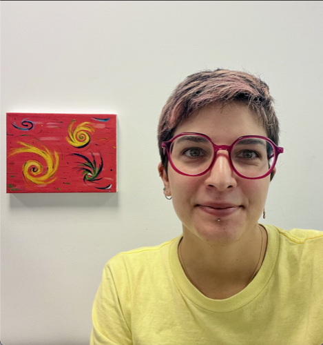
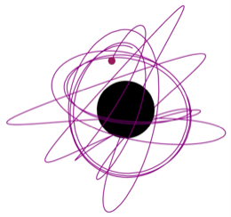
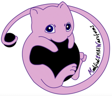

Waveform Modelling
Developing waveform models for EMRIs using black hole perturbation theory and self-force methods, aiming to reach the required accuracy for future LISA observations.
Postdoctoral Researcher · University College Dublin (UCD)

Hello! I'm Susi, a researcher in gravitational physics. I'm currently a postdoc at University College Dublin, primarily working with Dr Niels Warburton.
My story starts in the countryside near Pisa, on an organic farm called Monte Spazzavento,
where I grew up splitting my time between studying and helping with (or, more
honestly, trying my best to avoid) the olive harvest. After a
bachelor's degree in physics, I moved to R(h)ome for my master's and PhD, living close
enough to the Colosseum to make it my regular jogging route – not too bad!
There, supervised by Profs. Andrea Maselli, Leonardo Gualtieri and Paolo Pani,
I became fascinated by black holes, the signals they emit when they spiral around each other – gravitational waves – and exciting ways to use them
to probe fundamental physics.
After graduating, I spent a brief (and rainy) spell in
Nottingham as an Angelo Della Riccia Fellow, mentored by Prof. Thomas Sotiriou, before eventually
landing in Dublin.
Here, I continue working on gravitational wave physics, focusing on a particular type of source called Extreme Mass Ratio Inspirals (EMRIs), while doing my best to make the most of
Ireland's beautiful nature.

At the core of everything I do is gravity in its most extreme
regimes.
My favourite laboratory is the Extreme Mass-Ratio Inspiral (EMRI)
— a stellar-mass compact object slowly spiraling into a
supermassive black hole over years-long orbits, emitting intricate
gravitational wave signals rich in information about strong gravity.
EMRI signals are beyond the reach of current ground-based gravitational wave detectors. Luckily, that is about to change: in 2035, LISA, the first space-based gravitational wave observatory, is expected to launch. EMRIs are among its key targets, and testing gravity is one of its main scientific goals.
My research on these systems brings together three main areas: waveform modelling, fundamental physics, and data analysis.
Developing waveform models for EMRIs using black hole perturbation theory and self-force methods, aiming to reach the required accuracy for future LISA observations.
Exploring alternative theories of gravity and new physics beyond General Relativity and the Standard Model of particle physics. I study how new fundamental fields can leave signatures in the dynamics and gravitational-wave emission of EMRIs, turning these systems into precision probes of fundamental physics.
Turning gravitational-wave signals into measurements through parameter estimation and statistical inference. Using Bayesian Monte Carlo and Fisher-matrix methods, I study what LISA will be able to learn about EMRIs and identify possible signatures of new physics.

Python package for the fast generation of gravitational waves from asymmetric binaries with scalar fields, building on FastEMRIWaveforms (FEW).
During my time as a postdoc, I've had the chance to do some teaching – and really enjoyed it.
My first full course as a lecturer. I taught third-year students about partial differential equations and how they find their way into finance.
A short guest appearance in a first-year course, covering three hours of lectures on differential and difference equations.
I gave a lecture on fundamental physics with LISA to early-career researchers at the Les Houches LISA School.
I co-supervise Master's students working on gravitational physics. Here are some of the projects I've been involved in:
Interested in a thesis project on EMRIs, gravitational-wave modelling, or tests of gravity? Feel free to email me to discuss possible topics.